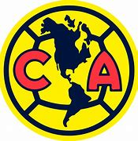

Regresar
Menu
Simbolos
Afición
Estadios
Entrenadores
Directiva
Apodos
CLUB AMERICA

El Club de Fútbol América S. A. de C. V. es un equipo de fútboln 1 profesional de la Primera División de México. Fue fundado el 12 de octubre de 1916 en la Ciudad de México por un grupo de estudiantes encabezados por el jugador Rafael Garza Gutiérrez y el profesor y entrenador Eugenio Cenoz. Disputa sus partidos como local en el Estadio Azteca, y los colores tradicionales del uniforme americanista son el amarillo y el azul.9
Es la institución con el mayor número de campeonatos en todo tipo de competencias oficiales entre los clubes del fútbol mexicano, sumando un total de 36 (26 nacionales y 10 internacionales).
Simbolos
Menu
Escudo
Desde su fundación, el 16 de octubre de 1916, el Club América ha mantenido el actual escudo, solo con ciertas variaciones y temporales excepciones. El primer diseño que portó el club desde su fundación hasta la década de los años 1940 (a excepción de un breve lapso de dos años en los que el club cambio de nombre), era de forma circular, la circunferencia de color azul, el círculo de color crema contenía la forma del continente americano en tono un poco más oscuro y con las iniciales «C» «A» en color azul marino flanqueándolo. El creador del símbolo fue el mismo jugador que ideó el nombre de la institución, Pedro Quintanilla. No obstante durante 1917 alternó en algunas ocasiones el escudo con un distintivo que presentaba las iniciales del club entrelazadas, con letras art nouveau.
Durante los años de 1918 – 1920, cuando el club cambio de nombre a «Club Centro Unión», igualmente utilizó un diseño circular y dentro el nombre del club con las letras en art decó entrelazadas. Al regresar al nombre anterior, volvieron a adoptar el escudo original.
La siguiente modificación fue hasta la temporada 1943-44, donde el escudo original fue encerrado en un triángulo junto con la imagen de un águila. Pero este emblema no tuvo buena aceptación y solo duró tres campañas.
Posteriormente, en los años 1950, se realizó la modificación más significativa y la que perdura en la actualidad. Al escudo se le agregó en el fondo del continente los gajos que simulan la forma de un balón, el continente es de color azul y las iniciales del club de color rojo.161
Cabe mencionar que el América es el único equipo en México que invierte los colores de su escudo según sea el color del uniforme que utilice, siendo:
Escudo con fondo azul y el continente amarillo: cuando se utiliza el uniforme amarillo.
Escudo con fondo amarillo y el continente azul: al utilizar el uniforme azul.
Las letras «C A» siempre aparecen en color rojo.
Afición
Menu
Popularidad
Contrario a la creencia, que señala la popularidad del club construida a partir de su incursión en la televisión en los años 1960; en realidad el club ya tenía un sólida base de aficionados en la región central del país, en especial de la Ciudad de México, desde la década de los años 1920. Esto debido a su irrupción como tetracampeón del Campeonato de Primera Fuerza de la FMF en las temporadas 1924-25, 1925-26, 1926-27, 1927-28, contando con un plantel constituido por una mayoría de jugadores mexicanos; en detrimento de los tradicionales clubes conformados en su mayoría por extranjeros (España, Asturias, Reforma, Germania, etc.). Dicha situación le generó la simpatía del público mexicano, por ende se convirtió en el equipo más popular de la Ciudad de México.168
De acuerdo a la más recientes encuestas de Grupo Reforma (2013 y 2017), Consulta Mitofsky (de 2014 a 2017, y de 2019 a 2020) y El Universal (2021), es el equipo más popular de México, delante de su tradicional rival, el Club Deportivo Guadalajara; sin embargo, de acuerdo a la segunda encuestadora, que también lo ubica como el "equipo más odiado", definió a los equipos en una tercera categoría a la que llama interés. Esto es, conocer la proporción de aficionados pendientes de la información, trayectoria o expectativas que le genera un equipo, sea de su agrado o no, lo cual surge de sumar los porcentajes de preferencia y rechazo; con base en ello se determinó que el 72 por ciento, es decir, casi 3 de cada 4 aficionados al fútbol mexicano tiene interés en el América (desempeño y/o resultados). En 2021, el América se mantenía posicionado como la escuadra con más afición en el país según la encuesta realizada por El Universal publicada el 24 de marzo de 2021.17162021 De la misma forma, el 20 de octubre de 2020, la empresa Gilt Edge Soccer Marketing publicó un estudio que ubicó al Conjunto de Coapa como el noveno equipo de fútbol más popular en Estados Unidos, el primero entre los equipos mexicanos.18
En el marco del fenómeno que significan las redes sociales, el equipo ha dado muestras de su popularidad, liderando las interacciones y el número de seguidores de las cinco principales plataformas (Facebook, Twitter, Instagram, You Tube y TikTok), entre los clubes mexicanos, e incluso ubicándose en el tercer lugar del continente.2223
Estadios
Menu
Al momento de su fundación el equipo realizaba sus partidos en los llanos de la colonia Condesa de la Ciudad de México y los patios de los Colegios Maristas dentro de los torneos estudiantiles en los que participó.
Una vez aceptado en la Liga Mexicana, el club compitió en los campos oficiales que había por entonces: el Campo Reforma (ubicado donde en la actualidad está el Centro Deportivo Chapultepec) y hacia 1919 en el estadio que inauguró el Real Club España, también sobre Paseo de la Reforma (a la altura de lo que hoy es la calle de Sevilla). Aquí América consiguió su dos primeros títulos de liga en 1924-25 y 1925-26. Existía un tercer inmueble llamado Parque Alianza, en él jugó de manera ocasional solo unas cuantas veces.
El 2 de mayo de 1926 el Club España inauguró el último de sus campos en la "Calzada de la Teja", situado en lo que hoy es el cruce de las calles Melchor Ocampo y Marina Nacional. Dicho estadio, conocido popularmente como "Campo de la Verónica", le sirvió como sede local en la consecución de los dos restantes títulos del tetracampeonato (1926-27, 1927-28) y la Copa México 1937-38.
El Parque Necaxa se convirtió en su nueva sede a partir de 1930, sin conseguir ningún título. Todos los escenarios anteriores sirvieron como sede del equipo para sus juegos como local, pero nunca le pertenecieron. A principios de la década de 1930 inició la construcción de un estadio al costado del Estadio Nacional pero nunca se concretó el proyecto.185
Considerando aquellos escenarios en los que no ejerció como local en algún duelo final o decisivo y obtuvo un título, el equipo se coronó en los estadios: André Kamperveen, Santa Ana, Olímpico de Montreal, Memorial Coliseum, Corregidora, Benito Juárez y Dignity Health Sports Park.186187
Parque Asturias 1936-1947
Artículo principal: Parque Asturias
En los once años que jugó en este inmueble, el América estuvo más cerca de los últimos lugares. Fue dos veces antepenúltimo, una penúltimo y solamente en una campaña alcanzó a quedar en séptimo lugar empatado con Atlante y Veracruz. Su primer partido oficial en este estadio fue el 24 de mayo de 1936 en la derrota 1-3 con Necaxa, juego de la semana 19 de la Liga Mayor 1935-36. Durante el año que permaneció cerrado el recinto, para rehabilitarlo luego del incendio del 26 de marzo de 1939, el equipo jugó en el Parque España. Su último partido oficial fue el 12 de octubre de 1950 dentro de la jornada 4 de la Liga 1950-51, el partido fue una derrota 3-1 frente a Marte. Este duelo fue tres años después de abandonar el inmueble y mudarse a la Ciudad de los Deportes, pues tuvo que usarlo como sede emergente.188
Olímpico de la Ciudad de los Deportes (1947-1955 y 2024-Actualidad)
Artículo principal: Estadio de la Ciudad de los Deportes
En dicho inmueble el América vivió más tardes negras que coloridas, ya que ahí pasó varios torneos donde logró salvarse del descenso, en algunos por su diferencia de goles y en otros por una mínima diferencia de puntos. No obstante, fue aquí dónde comenzó a recuperar el protagonismo con la obtención del bicampeonato de la Copa México en 1953-54 y 1954-55, y el Campeón de Campeones 1954-55. El primer duelo jugado por el cuadro Azulcrema como local ahí fue en la jornada 15 del torneo de Liga Mayor 1946-47, perdiendo ante el Atlas 1-3. Debido a los continuos problemas ocasionados por los altos precios de arrendamiento y los conflictos con el propietario del inmueble, en muchas ocasiones el equipo actuó de forma emergente en los antiguos parques; sin embargo la adquisición y consecuente cierre de estos por parte del mismo dueño de Ciudad de los Deportes, ocasionó que se estableciera definitivamente aquí.
A lo largo de los años se convirtió en una sede alterna recurrente en situaciones extraordinarias; sobresalen, algunos juegos como local durante el Torneo México 1970, mientras el estadio Azteca era acondicionado para la Copa Mundial de Fútbol de 1970; en 1993 cuando tuvo que emplearlo ante el uso del Coloso de Santa Úrsula para los conciertos de Michael Jackson; y el 26 de octubre de 2005 en el partido de ida de la ronda de octavos de final de la Copa Sudamericana 2005 ante Vélez Sarsfield (derrota 0-2), debido a la sanción de tres partidos de veto que pesaba sobre el estadio Azteca, consecuencia de los conflictos en el juego de vuelta de los octavos de final de la Copa Libertadores 2004 contra São Caetano.189190
El equipo regresaría en 2024 al inmueble de manera provisional, como consecuencia de la remodelación del Estadio Azteca, de cara a la Copa Mundial de Fútbol de 2026; teniendo garantizada su nueva localía, al menos, a partir de la disputa de la Copa de Campeones de la Concacaf 2024.191
Estadio Olímpico Universitario 1955-1966
Artículo principal: Estadio Olímpico Universitario
La historia de momentos penosos se mantuvo al irse a C.U.; sin embargo fue ahí donde el club comenzó a levantar y conquistó el título de liga después de una sequía de 37 años (1965-66), así como un bicampeonato de la Copa México (1963-64 y 1964-65).
El primer juego oficial jugado en esta cancha ocurrió el 10 de julio de 1955 en la jornada uno de la temporada 1955-56, con la derrota 1-2 del ahora conjunto local ante el Oro, el primer gol americanista fue de Manuel Cañibe. No obstante las distancias y algunos otros inconvenientes ocasionaron que el equipo regresara en la temporada 1956-57 a la Ciudad de los Deportes durante un año, después de esto se estableció definitivamente aquí. El último partido que disputó como local, fue el juego de vuelta de las semifinales de la Copa México 1965-66, el 3 de abril de 1966 ante León, que terminó con victoria 2-0 del conjunto local, pero cayó en el global 4-2. No obstante, lo usó por última vez como sede emergente el 13 de agosto de 2020 en la victoria 3-1 ante Santos Laguna, esto dentro de la jornada 4 del Apertura 2020, fue el último de los tres partidos disputados ahí durante el inicio del torneo, debido a modificaciones del Azteca en su sistema de iluminación.187192
Estadio Azteca 1966-Actualidad
Artículo principal: Estadio Azteca
Vista interior del Estadio Azteca.
Ubicado al sur de la Ciudad de México, en la demarcación Coyoacán; con capacidad para 83 264 espectadores, es el segundo estadio más grande del continente americano y el séptimo más grande del mundo. Es también conocido con el sobrenombre de "El Coloso de Santa Úrsula". Fue construido por el arquitecto Pedro Ramírez Vázquez e inaugurado el 29 de mayo de 1966 con el partido entre América y Torino de Italia, partido que finalizó con marcador de empate a dos goles. El primer gol lo anotó el brasileño Arlindo dos Santos, jugador del América.
En competencia oficial, su primer partido fue el 12 de junio de 1966, en el partido de vuelta de la ronda de octavos de final de la Copa México 1966-67 frente a Toluca, que terminó con derrota 2-4, con goles de Arlindo y Zague. En el torneo de liga su primer duelo fue el 21 de julio en la jornada uno de la campaña 1966-67 frente a Necaxa, que concluyó con triunfo de 1-0, con gol de Francisco Mancilla.
Considerando solo las finales disputadas en este escenario, América ha ganado aquí doce Campeonatos de liga (dos de ellos en calidad de visitante administrativo en el juego de vuelta de la final), uno de Copa México, cuatro de Campeón de Campeones, cuatro de Copa de Campeones de la Concacaf y dos de Copa Interamericana. Además perdió tres finales de liga, en 1971-72 contra Cruz Azul (disputándose este encuentro bajo la condición de cancha neutral), Apertura 2013 contra el León y Apertura 2019 con Monterrey; también cayó en el juego de ida de la final de la Copa Sudamericana 2007 contra Arsenal de Sarandí; en la final de la Copa México 1990-91 contra U. de G.; y en los duelos por el Campeón de Campeones de 1970-71 y 1973-74 contra León y Cruz Azul respectivamente.187193194
Entrenadores
Menu
Artículo principal: Anexo:Entrenadores del Club América
En los inicios del equipo (tal como era la constante en el balompié de la época) se carecía de manera formal de una persona que ejerciera el puesto de director técnico; las responsabilidades de impartir conocimientos sobre técnica individual y encabezar acondicionamientos físicos en los entrenamientos, normalmente eran asumidas por el jugador de más experiencia o por un entrenador sin cargo oficial. De esta manera la dupla Rafael Garza Gutiérrez (jugador) y Eugenio Cenoz se convirtió en la primera dirección técnica del club. Posteriormente sería el propio Rafael "Récord" Garza quien en solitario ejercería dicha función, al tiempo que actuaba como capitán en el terreno de juego. Sería el primero en obtener un título para el club en 1924-25, y quien (sumando los juegos a dupla con Cenoz, Spollet y Suinaga) acumularía la mayor cantidad de juegos dirigidos en la historia, con un total verificado de 310 en siete distintas etapas en la institución entre 1917 y 1949, incluyendo cinco en las que también actuó como jugador y una en la que permaneció seis años consecutivos dirigiendo, cifra jamás igualada en el club.
José Antonio Roca fue el técnico con la mayor cantidad de juegos consecutivos dirigiendo, al sumar 202 juegos en su primera etapa entre 1970 y 1975; en tanto Miguel Herrera es el de mayor número de victorias con 138 (sumando sus dos etapas). En cuanto a títulos sobresalen Jorge Vieira, Raúl Cárdenas y Miguel Herrera con 4 campeonatos cada uno.
De los 20 técnicos que lograron al menos un título con la institución, tres de ellos ya se habían coronado también como jugadores: Récord Garza, Octavio Vial y Carlos Reinoso. Cabe mencionar que Raúl Cárdenas, Roberto Scarone y Antonio Mohamed también fueron jugadores del equipo, pero nunca fueron campeones en esa etapa.
En total 80 distintos directores técnicos han dirigido al cuadro azulcrema, 41 mexicanos, 34 extranjeros (18 argentinos, cuatro españoles, tres uruguayos, tres brasileños, dos chilenos, un croata, un húngaro, un neerlandés, un peruano, un paraguayo, un británico y un yugoslavo) y dos cuyas nacionalidades se desconocen.241242243
Ocho exentrenadores del club fueron incluidos en el Salón de la Fama del Fútbol Internacional, un proyecto dedicado a preservar la memoria de relevantes personajes de la historia del fútbol; todos con distinto grado de relevancia en su estancia con el equipo (Cárdenas, Trelles, Miloc, Lapuente, L.F. Tena, Roca, Marcos y Lavolpe); "Récord" Garza, Reinoso y Alfredo Tena también están incluidos, pero sus ingresos se debieron en mayor medida a sus carreras como jugadores.224225
Directiva
Menu
Artículo principal: Anexo:Presidentes del Club América
El primer presidente en la historia del club fue Florencio Domínguez Cortina, uno de los fundadores y jugador del club; quien quedó a cargo de las primeras gestiones administrativas que permitieron al club integrarse a los torneos estudiantiles de la Ciudad de México y posteriormente a la Liga Mexicana. Además de él, otros tres jugadores llegarían a ocupar el máximo cargo directivo de la institución: Guillermo Gómez Arzapalo, Ernesto Sota y Ricardo Peláez. Sota incluso también fue entrenador.
En total han ejercido el cargo dentro de la institución 31 presidentes. Sobresalen sin lugar a dudas dos personajes: Guillermo Cañedo de la Bárcena, quien fuera contratado en 1961 por Emilio Azcárraga Milmo luego de que este comprara al club en 1959, permaneció 20 años en el cargo y bajo su administración se presentó la reconstrucción financiera y deportiva de la institución luego de años de crisis, se inició la costumbre de adquirir costosos y renombrados jugadores extranjeros y mexicanos, también como parte del proyecto de hacer del país una sede del Campeonato Mundial de Fútbol, dotó al equipo de su nueva casa, el Estadio Azteca; Encabezó en su administración el ambicioso plan del dueño por masificar la afición al fútbol partiendo de la popularidad de un equipo que antagonizara con el Guadalajara. Durante su administración el equipo obtuvo nueve títulos en total. Y con el también destaca la administración de Emilio Diez Barroso, sucesor de Cañedo en 1981, quien en 15 años al frente del club consolidó el proyecto de convertir al equipo en un espectáculo y fenómeno mediático, concibió el mote característico del club, restructuró las fuerzas básicas, internacionalizó a la institución y se convirtió en el más exitoso mandatario al obtener once títulos.
Mención aparte merecen personajes como Juan de Dios Bojórquez e Isaac Bessudo. El primero, presidente y benefactor del club entre 1930-32, quien ideara un proyecto para construir un club deportivo y un estadio, en una época donde muchos de los funcionarios del Maximato se convirtieron en socios y aficionados del club, por lo que gozó momentáneamente de una bonanza económica y administrativa como sociedad cooperativa; Y el segundo quien no solo fue presidente, sino propietario de la institución cuando su compañía refresquera Jarritos compró al club en 1956 para evitar la desaparición del equipo, luego de que las crisis deportivas acarrearon una crisis económica. Otra mención, más anecdótica, es la de Mario Moreno Cantinflas, el popular y exitoso comediante mexicano, aficionado al equipo, quien fue nombrado Presidente honorario de la institución en 1949. Por supuesto cabe resaltar que todos los presidentes del club desde 1961 han estado vinculados con la estructura administrativa, financiera o hasta familiar (recordando a Pablo Cañedo White y Guillermo Cañedo White) de la empresa propietaria: Televisa.
Mención especial también para Francisco "Panchito" Hernández, que si bien nunca fue presidente, ejerció una especie de dirección deportiva entre 1968 y 1996, en la cual tuvo la responsabilidad de la contratación de refuerzos extranjeros, fue su visión la que permitió la llegada de jugadores como Carlos Reinoso, Antonio Carlos Santos, Daniel Brailovsky, Héctor Miguel Zelada, entre otros.7778
Tanto Cañedo de la Barcena, como "Panchito" Hernández fueron incluidos en el Salón de la Fama del Fútbol Internacional, un proyecto dedicado a preservar la memoria de relevantes personajes de la historia del fútbol. A ellos se sumó en este recinto conmemorativo el propietario que generó la restructuración del equipo a partir de 1959, Emilio Azcárraga Milmo.224225
En 2011 se inició una nueva reestructuración en la directiva del Club América, en la cual se creó un Consejo Directivo como el encargado de determinar las estrategias a aplicar en el manejo de la institución y que es encabezado por Emilio Azcárraga Jean, presidente de Grupo Televisa y en ese momento bajo la dirección general de Yon de Luisa Plazas, entonces Director del Comité de Fútbol de Grupo Televisa.
Apodos
Menu
El águila, símbolo del club en la actualidad.
El club ha contado a lo largo de su historia con diversos motes o apodos, los cuales algunos los adoptó el mismo club, mientras que otros le han sido impuestos por diversas razones.163 Entre estos se encuentran los siguientes:
Estudiantes: Apodo poco conocido y solo utilizado durante los primeros años del club. Los rivales empezaron a llamarlo de esta manera debido a que el club fue formado por la fusión de los equipos de los colegios "Mascarones" y "La Perpetua". Gracias a esto, al momento de su ingreso a la Liga Mexicana, el América estaba compuesto en gran parte por jugadores muy jóvenes, incluso varios de ellos, eran aún estudiantes.
Azulcremas o Cremas: este apodo es uno de los más característicos y añejos del club, el cual data desde los años 1920 y surge por los colores del uniforme que utilizaba el club, que en aquellos años consistía en la camisa de color crema y los pantaloncillos y calcetas de color azul.163
Canarios: apodo con el que se le conocía al equipo desde los años 1940, este también es debido al color amarillo de su uniforme.164
Millonetas: Variante coloquial de la palabra Millonario. Se empezó a usar cuando el empresario Emilio Azcárraga Milmo compró al club en 1959 y esté contrató dos años después al exitoso presidente del Club Zacatepec, Guillermo Cañedo de la Bárcena; además empezó a adquirir notables figuras extranjeras y así, con base en el dinero, formar el poderío del equipo.165
Águilas: Aunque este emblema ya había aparecido fugazmente en una variante del escudo del club en los años 1940, fue el 20 de septiembre de 1981 con la llegada del presidente americanista Emilio Díez Barroso que, buscando renovar la imagen del club decide cambiar el mote del equipo a Águilas, pues se buscó tomar la representación de un animal que transmitiera orgullo y además dominara su ambiente,166 todo esto apoyados de una fuerte campaña publicitaria. Este apodo permanece hasta nuestros días con gran aceptación.
Mascotas
Desde 1981, la mascota oficial es un Águila real, la cual actualmente, de nombre "Celeste", hace unos breves vuelos en la parte trasera de las instalaciones de Coapa, sin la presencia de personas, salvo su entrenador. El ave surca el Estadio Azteca en cada partido del equipo, donde termina su trayecto encima del balón y más tarde en el brazo de su responsable. En 1989 Javier Ramírez Campuzano, hijo de Pedro Ramírez Vázquez, creó un personaje animado representativo del águila que recibía el nombre de "Cuauhtli" (águila en idioma náhuatl), dicho personaje era un águila vistiendo el icónico uniforme ochentero, esta aparecía en forma de caricatura en las transmisiones del partido, como botarga y en los múltiples afiches, banderas y recuerdos del equipo. A lo largo del tiempo se recuerdan otras mascotas como el Milloneta, un personaje representado con cabeza de globo terráqueo observándose el escudo del club, vestimenta elegante con saco, guantes, monóculo, pantaloncillo azul y un sombrero de bombín, vigente desde finales de los años cincuenta hasta finales de la década de 1960.